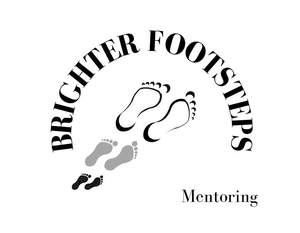

Trade Mark Journal No.2025/019 9 May 2025
UK00004191629 19 April 2025 (41)

- Class 41
- Organisation of youth training schemes; Academic mentoring of school age children; Arranging and conducting of youth soccer training programs; Vocational education for young people; Conducting of instructional, educational and training courses for young people and adults; Life coaching (training); Education; Business mentoring services; Coaching [training]; Career counselling [training and education advice]; Career counselling and coaching; Guidance (Vocational -) [education or training advice]; Vocational guidance [education or training advice]; Career advisory services (education or training advice); Providing of training, teaching and tuition; Personal coaching [training]; Career counselling relating to education and training; Coaching; Education, teaching and training; Training or education services in the field of life coaching; Education and training consultancy; Provision of training courses for young people in preparation for careers; Conducting workshops [training]; Consultancy relating to vocational skills training; Providing of training; Providing training; Providing online training seminars; Providing courses of training for young people; Career counseling [education]; Career information and advisory services (educational and training advice); Tutoring; Provision of training courses for young people in preparation for employment; Conducting training seminars for clients; Education academy services for teaching construction drafting; Workshops (Arranging and conducting of -) [training]; Arranging and conducting of workshops [training]; Arranging and conducting of training workshops; Courses for the development of consulting skills; Arranging professional workshop and training courses; Education and training; Organisation of training seminars; Arranging and conducting of workshops and seminars in self-awareness; Vocational skills training (Provision of -); Provision of training courses in personal development; Training consultancy; Education academy services for teaching acting; Provision of training courses for young people in preparation for vocations; Career and vocational training; Coaching services; Provision of training and education; Provision of education and training; Conducting training seminars; Organisation of youth training schemes relating to the tool industry; Vocational skills training; Arrangement of training courses in teaching institutes; Arranging and conducting of youth American football training programs; Organisation of seminars relating to training; Career and vocational counselling; Personal development training; Training for parents in parenting skills; Organisation of youth training schemes relating to the building industry; Training and further training consultancy; Providing courses of training; Arranging and conducting of training seminars; Training relating to employment opportunities; Providing training courses on business management; Sports tuition, coaching and instruction; Courses (Training -) relating to research and development; Consultancy services relating to the development of training courses; Organisation of conferences relating to vocational training; Educational and training programs in the field of risk management; Training and instruction; Arranging and conducting of soccer training programs; Vocational guidance; Arranging of seminars relating to training; Conducting educational support programmes for carers; Training of teachers; Computerised training in career counselling; Organising of education seminars; Providing courses of instruction for young people; Arranging teaching programmes; Conducting educational support programmes for healthcare professionals; Training in business skills; Training relating to employment skills; Teacher training services; Teaching services for communication skills; Teaching academy services; Vocational training; Training and education services; Education and training services; Esports coaching; Organising of business training; Training in the development of computer programs; Training; Vocational education and training services; Employment training; Education services relating to vocational training; Medical training and teaching; Political speech training and coaching; Instructional and training services; Education and training services in relation to business management; Teaching services relating to business assistance; Educational services for teaching acting; Educational services in the nature of coaching; Education and training in the field of business management; Consultancy services relating to the education and training of management and of personnel; Educational services for teaching manual writing; Services for arranging teaching programmes; Coaching relating to finance; Conducting of instructional seminars relating to time management; Education services relating to business training; Developing international student exchange programs; Political debate training and coaching; Publication of educational and training guides; Vocational training courses (Provision of -); Workshops for training purposes; Advisory services relating to training; Conducting educational support programmes for patients; Consultancy services relating to engineering training; Organisation of continuing educational seminars; Educational services for teaching keyboard writing; Conducting of instructional seminars relating to time organisation; Vocational training services; Arranging and conducting of training courses; Conducting of instructional seminars; Provision of training facilities for young people; Physical fitness instruction for adults and children; Training of non-medical staff in the care of children; Educational services provided for teachers of children; Teaching of french to children through recreation; Adventure training for children; Training for parents in the organisation of parent support groups; Educational services provided for children; Arranging and conducting of day school courses for adults; Provision of play facilities for children; Adult training; Provision of entertainment services for children; Educational assistance services for persons with individual needs; Providing recreational areas in the nature of play areas for children; Arranging for students to participate in educational activities; Arranging for students to participate in educational courses; Sports coaching; Football academy services; Organization of soccer competitions; Soccer camp services; Organisation of teaching activities; Organisation of sports activities for summer camps; Personal trainer services [fitness training]; Sports coaching services; Coaching in the field of sports.
Damien Donoghue